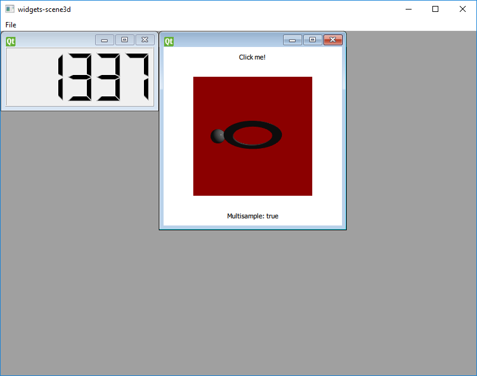

Qt 3D: Scene3D QML with Widgets Example
A QWidget-based application with a QML scene containing a 3D scene.

widgets-scene3D demonstrates visualizing a 3D scene from a QWidget-based application using QQuickWidget.
The actual 3D scene is the same as in the scene3d example.
This approach is different from the one based on QWidget::createWindowContainer() demonstrated in basicshapes-cpp because it does not create a native window for the Qt 3D content. Rather, it uses QQuickWidget, a genuine QWidget subclass to compose the Qt Quick and Qt 3D content together with the traditional widgets.
Note: Be aware of the performance implications. While this approach is very flexible in the sense that it allows mixing QML and Qt 3D with widgets without clipping or stacking issues, using Scene3D in a QQuickWidget involves rendering to offscreen render targets (via framebuffer objects) twice. This is not always desirable for more complex scenes. For those the native window based approach shown in basicshapes-cpp will likely be a better choice.
Running the Example
To run the example from Qt Creator, open the Welcome mode and select the example from Examples. For more information, visit Building and Running an Example.